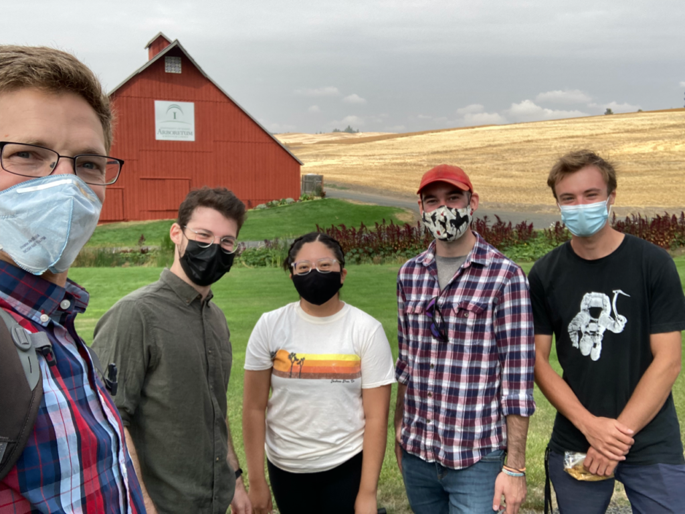

With the addition of Verenis Lucas, Yoram Terleth, and Bruno Belotti, our lab group has grown to five graduate student researchers. Verenis will be working on early-season glacier hydrology, Yoram on glacier surges and basal motion, and Bruno (co-advised with Dr. Liz Cassel, also in our department) will be working on coupled glacier and landscape change. It's great having everyone here together!
